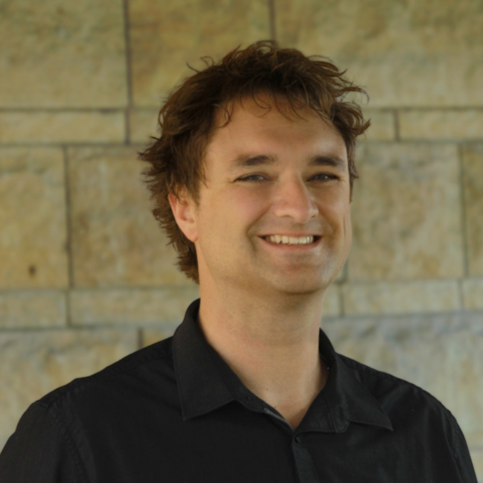

About Me
I’m here to create, enjoy life, and empower others to do the same. I'm currently the founder of Sika Education, an education company focused on personalized learning and outcomes-based software engineering education. Previously, I was the Director of Education for Flatiron School, the Faculty Director for Galvanize, and Executive Director of Develop Denver.
I want to be a software engineer because I view software engineering as one of the most powerful forms of creation. As a musician, I'm limited to creating sounds; with software, I can make almost anything I can imagine. Furthermore, it's never been easier to reach a global audience with software. I look forward to using my software engineering skills to make learning and teaching easier than ever!